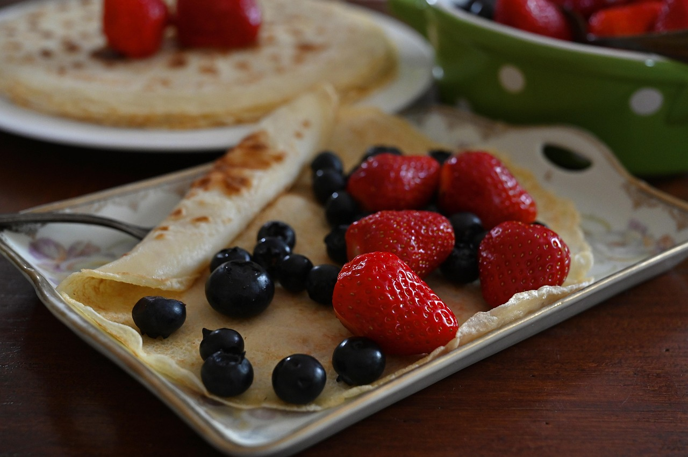
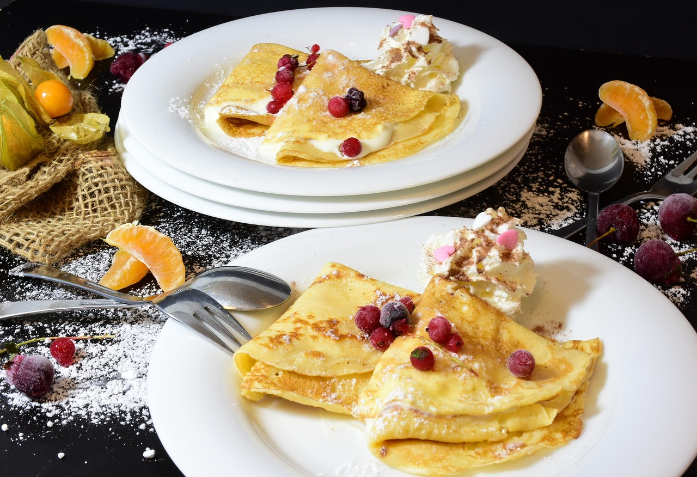

Enkelt recept på pannkakor
Gör traditionella tunna pankakor med detta enkla och goda pannkaksrecept.
Ingredienser
(4 port)- 2 1/2 vetemjöl
- 1/2 tsk salt
- 6 dl mjölk
- 3 ägg
- smör (till stekning)
- sylt, bär eller frukt till servering
Så här gör du
Blanda mjöl och salt i en bunke.
-
Vispa i hälften av mjölken och vispa till en slät smet.
Vispa i resten av mjölken och äggen.
Låt smeten vila ca 10 minuter.
-
Stek tunna pannkakor i lite smöt, för varje pannkaka, i en stek- eller pannkakspanna.
Servera med sylt, bär eller frukt.
Serveringsförslag

